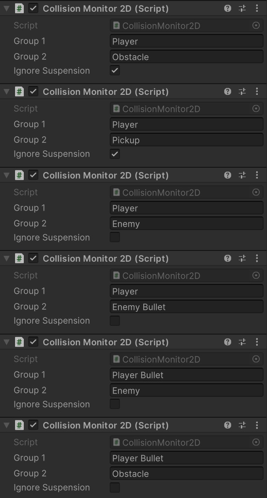

Pyro / Collision System
Pyro has its own lightweight collision system.It uses the following classes:
CollisionMonitor2D
CollisionState
CollisionAudio
The Collision State
The class contains various properties and methods for managing collision behavior and effects.
Let's explain some key functionalities:
Colliders - The Collision State relies on Collider 2D components. If a collider is missing, a Box Collider 2D will be automatically added.
Group - Specifies the group to which the object belongs. The Collision Monitor utilizes these groups to identify and manage collisions between objects. For instance, if sprite A and B have their Group variables named player and Enemy respectively, collisions will be detected according to the defined groups in the Collision Monitor example.
Structural Integrity - Represents the health or durability of the object. Decreases when the object takes damage and can lead to destruction when it reaches zero.
Ghost Material - Allows the object to display a ghosting effect when it takes damage.
Cargo Settings - Controls the release of cargo objects when the object is destroyed.
Event Settings - Defines Unity events to trigger at different stages, such as onAwake and onOutro.
Outro Settings - Specifies effects to play when the object is destroyed, including visual, audio, and messenger effects.
See CollisionState for information about the CollisionState settings or variables.
Sound Effects
The Collision Audio, or CollisionAudio component, determines which sound effects are played based on the material assigned (distinct from Unity materials), such as steel, glass, or wood, which determine the sound upon impact.These are predefined:
Metal <=> Metal
Metal <=> Flesh
If you're content with these predefined sound effects, there's no need to customize.
However, if you wish to personalize the sound effects, start by creating a GameObject and adding the Collision Audio component to it.
For example:

The Collision Monitor
The Collision Monitor, or CollisionMonitor2D, defines which objects or groups of objects are detected upon collision.Pyro's built-in Collision Monitor handles collisions between various predefined groups:
Player <=> Obstacle
Player <=> Pickup
Player <=> Enemy
Player <=> Enemy Bullet
Player <=> Enemy Missile
Player <=> Enemy Laser
Player Bullet <=> Enemy
Player Bullet <=> Obstacle
Player Bullet <=> Enemy Missile
Enemy <=> Obstacle
Enemy <=> Player Missile
Enemy <=> Enemy Laser
Enemy Bullet <=> Obstacle
Enemy Bullet <=> Enemy Laser
Player Missile <=> Player Missile
Enemy Missile <=> Enemy Missile
If you are satisfied with these predefined groups, there's no need to set up your own Collision Monitor.
However, if you wish to customize the collision detection, you must begin by creating a GameObject and adding the Collision Monitor component to it.
For example:

Example can be found in Assets/Playniax/Framework/Pyro/Scenes/01 - Engine/09 - Collisions/CollisionMonitor2D.unity